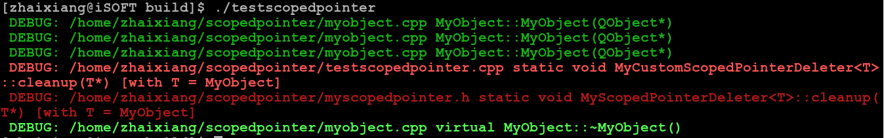

前几天在做代码审核的时候，Kai Uwe Broulik建议使用QScopedPointer来替代手工内存管理，使用后发觉确实节约了不少代码量，我的CHERRY可以延长寿命了！但是通过简单地阅读代码，发现和Python等动态语言的垃圾回收机制不同，并没有使用引用计数！下面我们来看看：
是的！从4.6开始，就可以替代：
if (myObj) {
delete myObj;
myObj = NULL;
}
QScopedPointer<MyObject> myObjPtr;然后在源文件中初始化它：
MyClass::MyClass()
: myObjPtr(new MyObject)
{
// your constructor...
}
查看QScopedPointer源代码里的注释：把基于栈的内存所有权给堆分配，称之为RAII。被这些拽术语的吓到了？那可以看看三点水的入门级《手把手教你构建 C 语言编译器》讲解的“虚拟”内存布局。QScopedPointer没有拷贝构造函数，也就是不能QScopedPointer(const QScopedPointer<T> &other)，也没有重载=运算符，也就是不能myObjPtr = QScopedPointer<MyObject>(new MyObject);QScopedPointer模板类中定义了Cleanup的默认参数为QScopedPointerDeleter<T>，然后在QScopedPointer的析构函数里调用之Cleanup::cleanup，我们可以自定义一个故意不释放内存指针的MyScopedPointerDeleter模板类：
template <typename T>
struct MyScopedPointerDeleter
{
static inline void cleanup(T *pointer)
{
qDebug() << "\033[31m" << "DEBUG:" << __FILE__ << __PRETTY_FUNCTION__ << "\033[0m";
}
};
new MyObject[XXX]，QScopedArrayPointer模板类也提供了QScopedPointerArrayDeleter模板类的cleanup，针对C风格的malloc，还提供了QScopedPointerPodDeleter模板类的cleanup。
最简单的实现就是Ctrl+C/Ctrl+V：把qscopedpointer.h源代码拷贝出来，把QScoped替换成MyScoped，哦，对了，您不用再搬砖，我已经替大家搬完了！运行效果如下图所示：  可以发现调用了3次MyObject的构造函数，但只成功（被MyScopedPointer的析构函数）调用了1次MyObject的析构函数，其他2次中一个是忘记delete了new分配的MyObject*，另一个是故意写一个忘记delete的MyCustomScopedPointerDeleter ;-)